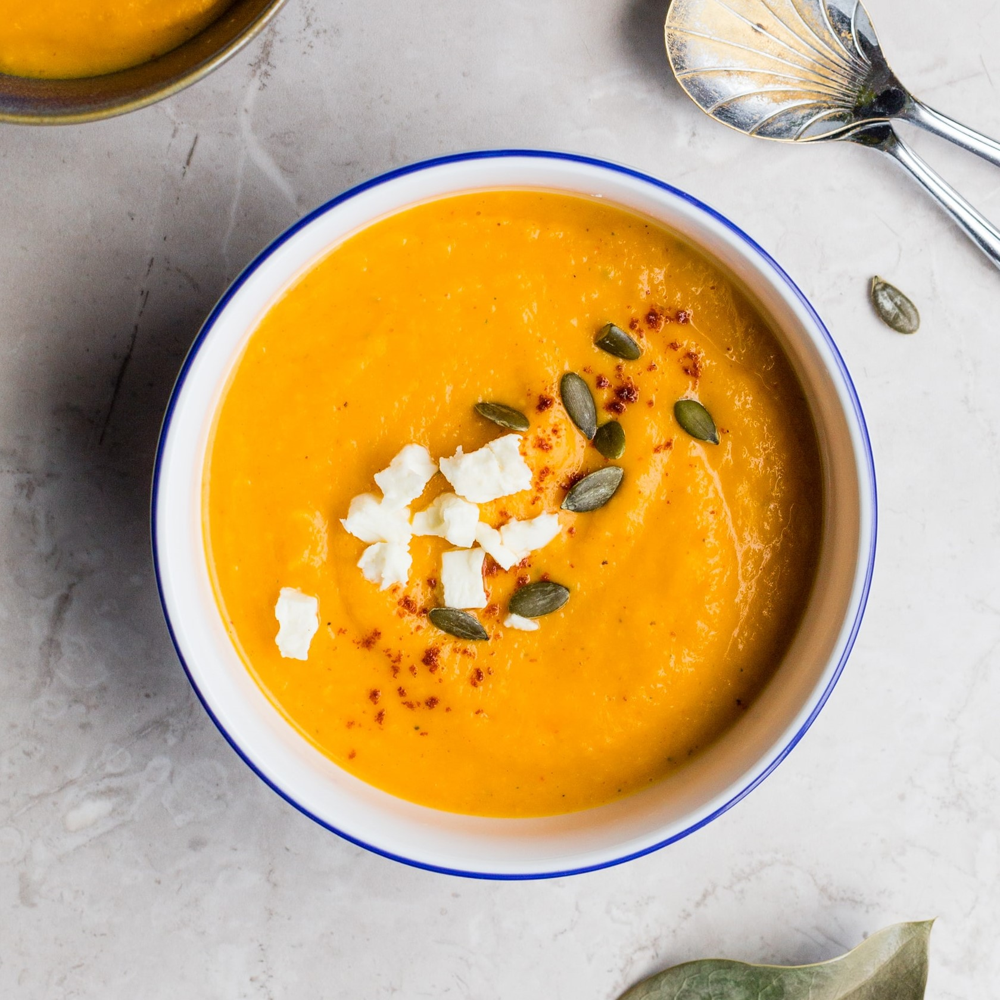
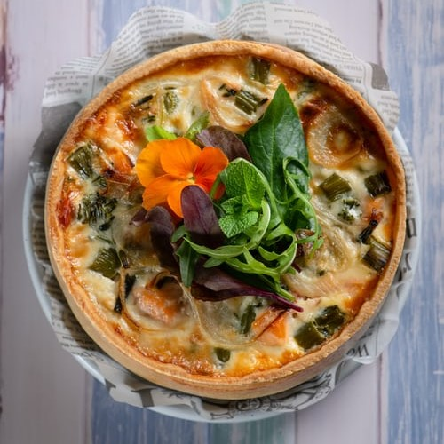
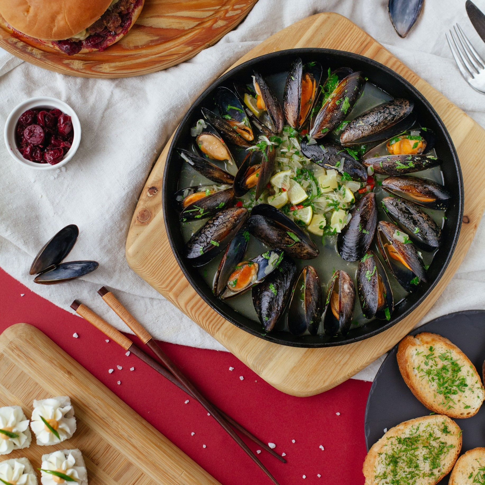
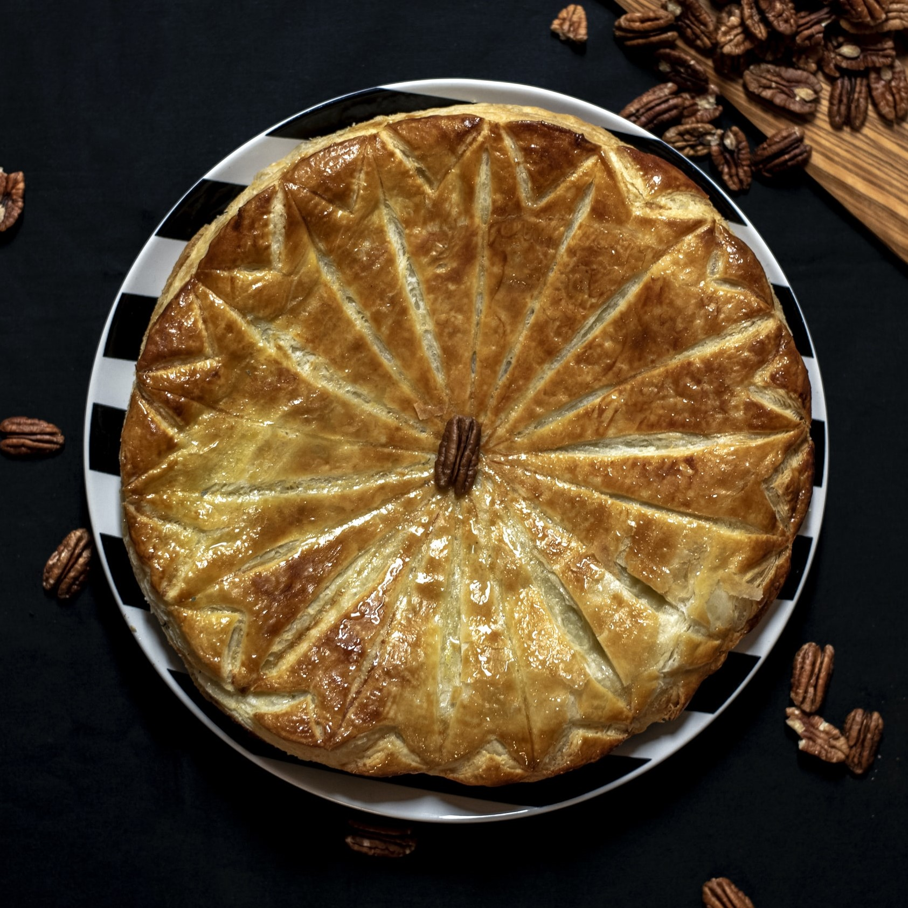
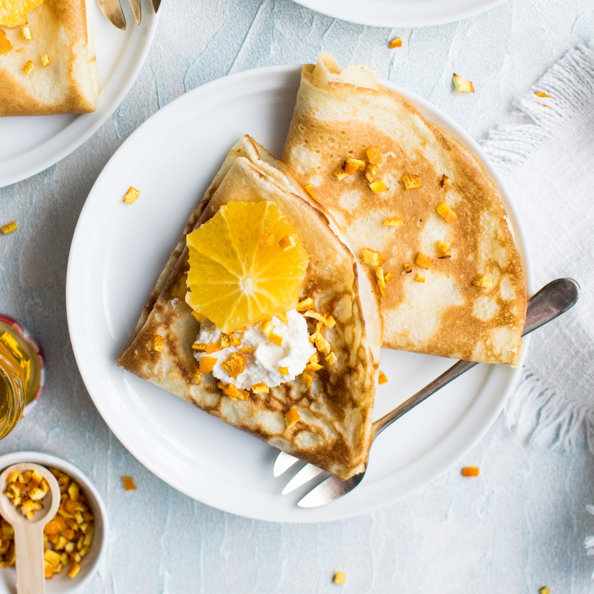
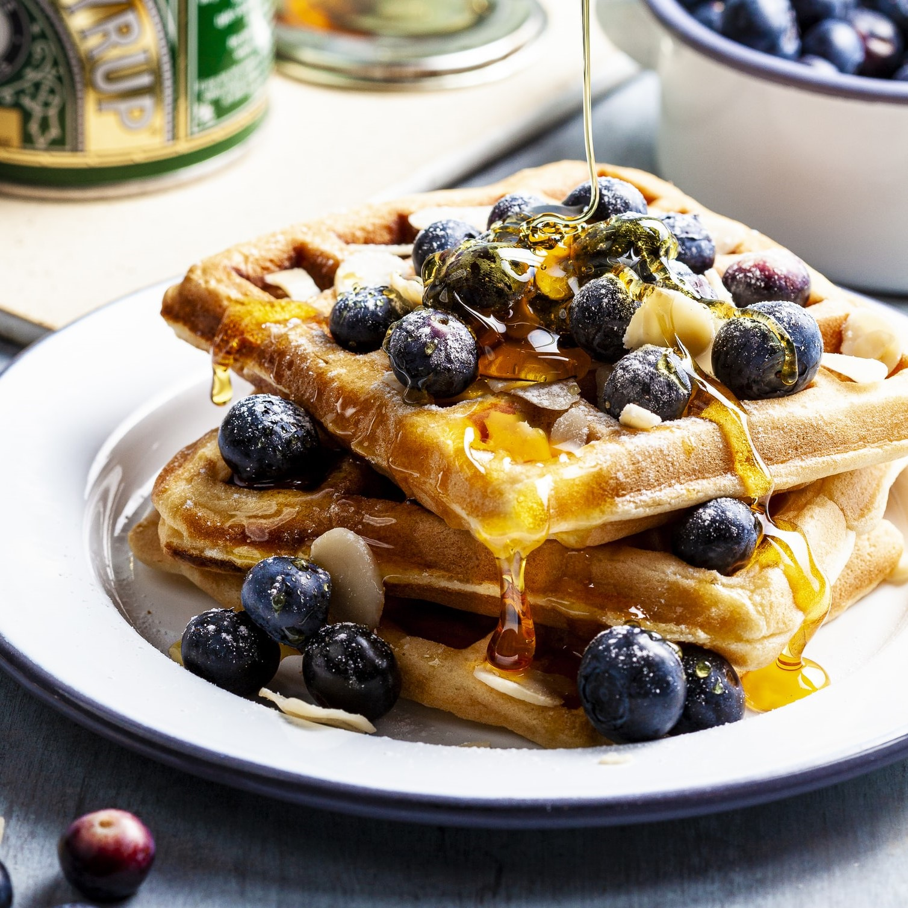
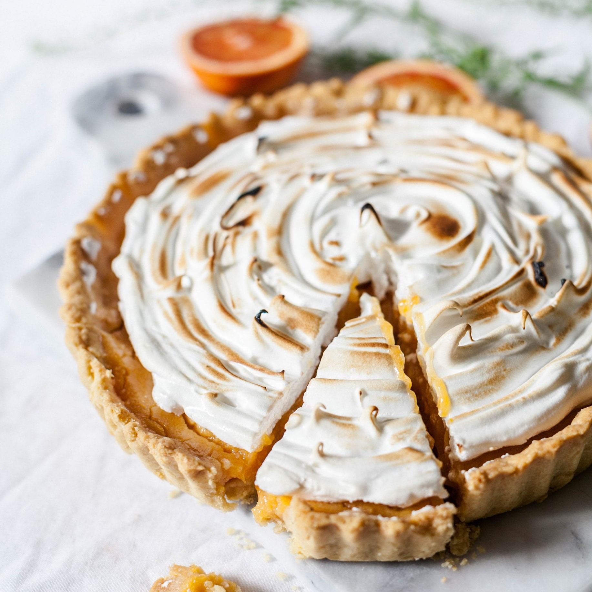
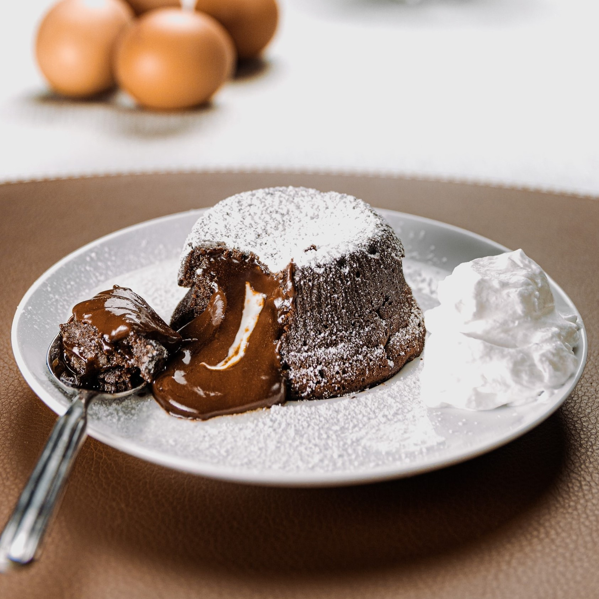
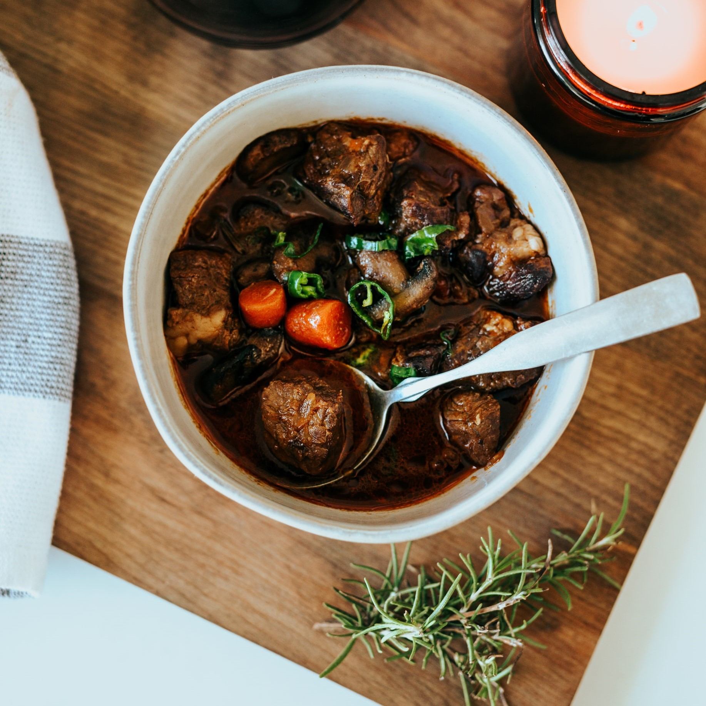
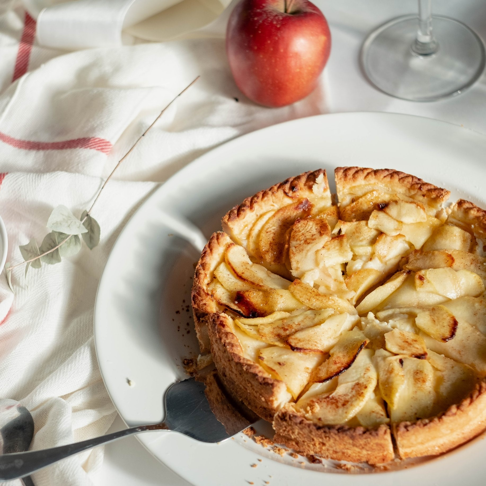

Soupe de potimarron
veloutée veloutee mixer hachees creme fraiche
• 2 pommes de terre
• 3 gousses d'ail hachées
• 1 cuillère à café de curry
• 1 potimarron
• 1 pincée de muscade
• 10 cl de crème fraîche
• sel
• poivre
Enlever l'écorce et les pépins du potimarron, puis couper la chair en gros morceaux.
Eplucher les pommes de terre puis les couper en gros morceaux.
Faire revenir les oignons et l'ail hachés dans un peu de beurre à feu doux.
Ajouter les pommes de terre et le potimarron, faire revenir 5 min.
Lorsque les légumes sont cuits (vérifier à l'aide d'un couteau), mixer votre préparation.

Paëlla de fruits de mer
espagne paella paelia
• 250 g de riz
• 500 g de filet de poulet
• 50 cl de moules
• 250 g de calamar
• 8 crevettes
• 1 chorizo
• 400 g de tomate
• 0.5 l de bouillon de volaille
Découper le poulet en morceaux, nettoyer les moules, émincer le chorizo et les poivrons, peler et concasser les tomates, hacher les oignons et l'ail.
Mettre l'huile dans le plat et faire dorer les morceaux de poulet.
Ajouter les calamars, les oignons tout en remuant puis mettre les tomates, les poivrons, l'ail, le safran, le sel et le poivre.
Laisser cuire 5 minutes en remuant avant d'incorporer le riz, le chorizo et le bouillon.
Y plonger les crevettes et les moules, porter à ébullition puis laisser cuire environ 30-35 minutes.

Quiche Lorraine
alsace pate brisee creme fraiche
• 200 g de pâte brisée
• 200 g de lardons
• 20 cl de lait
• 30 g de beurre
• 3 oeufs
• 20 cl de crème fraîche
• muscade
• sel/poivre
Préchauffer le four à 180°C (thermostat 6). Etaler la pâte dans un moule, la piquer à la fourchette. Parsemer de copeaux de beurre.
Faire rissoler les lardons à la poêle.
Battre les oeufs, la crème fraîche et le lait. Ajouter les lardons.
Assaisonner de sel, de poivre et de muscade. Verser sur la pâte.
Cuire 45 à 50 min.

Croque-Monsieur
sandwich croque-monsieur croque-madame madame gruyere rape epaisse creme fraiche
• 8 tranches de pain de mie
• 200 g gruyère râpé
• 1 pot de crème fraîche
• 6 tranches de jambon blanc
• sel
• poivre
• origan
• beurre
Beurrer l'extérieur des tranches de pain de mie.
Sur une tranche de pain de mie, déposer du gruyère autour, en laissant un petit puits au milieu, y déposer le jaune d'oeuf.
Puis, recouvrir d'1/2 tranche de jambon
Déposer 1 cuillère de crème fraîche au-dessus, du poivre et de l'origan.
Recouvrir d'1 tranche de pain de mie et passer le tout dans l'appareil à croque-monsieur.

Moules marinières
marinieres frites moules-frites bretagne echalotes
• 15 cl de vin blanc sec
• 1 cuillère à café de farine
• 4 l de moules
• 30 g de beurre/margarine
• 2 échalotes
• persil
• sel
• poivre
Grattez bien et lavez les moules. Mettez-les dans une cocotte avec 1 noix de beurre, les échalotes hachées et le vin blanc.
Faites-les ouvrir dans la cocotte couverte, sur feu vif pendant quelques minutes. Mélangez 2 ou 3 fois pendant la cuisson.
Dès qu'elles sont ouvertes, retirez les moules de la cocotte en conservant le jus de la cuisson. Déposez-les dans 1 plat creux et gardez-les au chaud.
Remettez le jus sur le feu. Malaxez avec 1 fourchette 1 cuillerée à café de farine avec le même volume de beurre ou de margarine. Incorporez le tout au jus de la cuisson des moules sur le feu. Laissez bouillir un instant. Salez poivrez.
Versez sur les moules. Saupoudrez de persil haché et servez.

Galette des rois
pate feuilletees gateau gâteau feves dessert
• 2 pâtes feuilletées
• 140 g de poudre d'amandes
• 100 g de sucre fin
• 2 oeufs
• 75 g de beurre tendre
• 1 jaune d'oeuf
• 1 fèves
• amour
Placer une pâte feuilletée dans un moule à tarte, piquer la pâte avec une fourchette.
Dans un saladier, mélanger la poudre d'amandes, le sucre, les 2 oeufs et le beurre mou.
Placer la pâte obtenue dans le moule à tarte et y cacher la fève.
Recouvrir avec la 2ème pâte feuilletée, en collant bien les bords. Faire des dessins sur le couvercle et badigeonner avec le jaune d'oeuf.
Enfourner pendant 20 à 30 min à 200°C (thermostat 6-7); vérifier régulièrement la cuisson

Crêpes à la règle de 3
crepe bretagne pate pancake dessert
• 300 g de farine
• 75 cl de lait
• 3 cuillères à soupe d'huile
• 3 oeufs
• amour
• encore amoure
• beaucoup d'amour
• beaucoup-beaucoup d'amour
Mélanger le tout.
Faire cuire (une à une !!!!) dans une poêle anti-adhésive (ou frotter le fond de votre poêle avec un essuie-tout huilé).

Les gaufres du mercredi
waffle pate vanille melanger dessert
• 75 g de sucre
• 1 sachet de sucre vanillé
• 200 g de farine
• 5.5 g de levure chimique
• 1⁄4 l de lait
• 80 g de beurre
• 3 oeufs
• amour
Faire fondre le beurre, et mélangez-le au sucre et au sucre vanillé.
Battre 2 œufs entiers et un jaune d'œuf à la fourchette. Réserver le troisième blanc à part, pour le battre en neige.
Ajouter les oeufs battus au mélange précédent. Joigner la farine tamisée avec la levure en poudre.
Verser UN PEU DE LAIT, en délayant PROGRESSIVEMENT pour ne pas faire de grumeaux (cuillère en bois).
Battre le blanc d'oeuf en neige, et incorporer DELICATEMENT à la pâte. Graisser le gaufrier, et les faire cuire pendant 2 à 3 min.

Tarte meringuée au citron
dessert creme fraiche pate brisee meringuee
• 1 pincée de sel
• 200 g de sucre
• 1 pâte brisée ou sablée
• 20 cl de crème fraîche
• 60 g de sucre glace
• 2 citrons non traités
• 5 oeufs
• amour
Préchauffer le four à 180°C (thermostat 6) pendant 10 min. Garnir le plat à tarte avec la pâte piquée avec une fourchette. Mettre du papier sulfurisé et recouvrir de haricots secs. Laisser cuire dix minutes (la pâte ne doit pas colorer ou très peu).
Dans un saladier, mélanger deux œufs entiers et deux jaunes (mettre les blancs de côté), la crème fraîche et 150 g de sucre. Ensuite, ajouter le jus des deux citrons ainsi que leur zeste râpé très finement.
Sortir la pâte du four, enlever les haricots et le papier et mettre le mélange. Enfourner pendant une demi-heure.
Pendant ce temps, préparer la meringue : reprendre les blancs de tout à l'heure et y ajouter le blanc du dernier œuf. Mettre une pincée de sel et battre les blancs en neige. Quand ils sont fermes, ajouter doucement le sucre en continuant à battre.
Sortir la tarte du four, éteindre le four. Mettre la meringue sur la tarte rapidement et remettre dans le four (éteint). La meringue va prendre une belle teinte dorée.

Fondant au chocolat
Ramequins au chocolat aux coeurs fondants dessert patissier patisserie
• 100 g de chocolat pâtissier
• 8 carrés de chocolat
• 20 g de farine
• 80 g de sucre
• 3 oeufs
• 60 g de beurre
• amour
• beaucoup d'amour
Préchauffez le four à thermostat 8 (250°C).
Faites fondre les 100 g de chocolat. Ajoutez le beurre.
Dans un saladier, mélangez les oeufs, le sucre et la farine. Incorporez-y le chocolat et mélangez.
Beurrez et farinez les ramequins. Versez-y le tiers de la préparation, puis déposez 2 carrés de chocolat dans chaque ramequin. Recouvrez du reste de la préparation.
Placez les ramequins au four 8-10 min. Dégustez les ramequins tièdes, démoulés ou non.

Boeuf Bourguignon
stew beef
• 100 g de lardons
• 2⁄3 l de vin rouge
• 1 gousse d'ail
• 1 bouquet garni
• 250 g de champignon Paris
• 800 g de boeuf bourguignon
• 2 oignons
• sel/poivre/farine/huile
Hacher les oignons. Peler l'ail. Dans une cocotte minute, faire roussir la viande et les lardons dans l’huile ou le beurre.
Ajouter les oignons, les champignons égouttés et saupoudrer de fariner. Mélanger et laisser dorer un instant.
Mouiller avec le vin rouge qui doit recouvrir la viande. Saler et poivrer. Ajouter l’ail et le bouquet garni.
Fermer la cocotte minute.
Laisser cuire doucement 60 min à partir de la mise en rotation de la soupape.

Tarte aux pommes
dessert pate brisee vanille creme fraiche
• 3-4 pommes
• 1 pâte brisée
• 100 g de sucre en poudre
• 1 sachet de sucre vanillé
• 2 oeufs
• 25 cl de crème fraîche
• amour
• beaucoup d'amour
Pelez et coupez les pommes en fines tranches
Dans un saladier, mélangez le sucre, les oeufs, le sucre vanillé, la crème fraîche.
Etalez la pâte dans un moule à tarte et piquez le fond à l'aide d'une fourchette. Disposez les pommes sur la pâte et versez le tout sur les pommes (ou versez uniquement la crème).
Puis disposer les lamelles de pommes roulées sur elles-même en roses.
Enfournez environ 30 minutes, jusqu'à ce que la tarte prenne une belle couleur dorée.